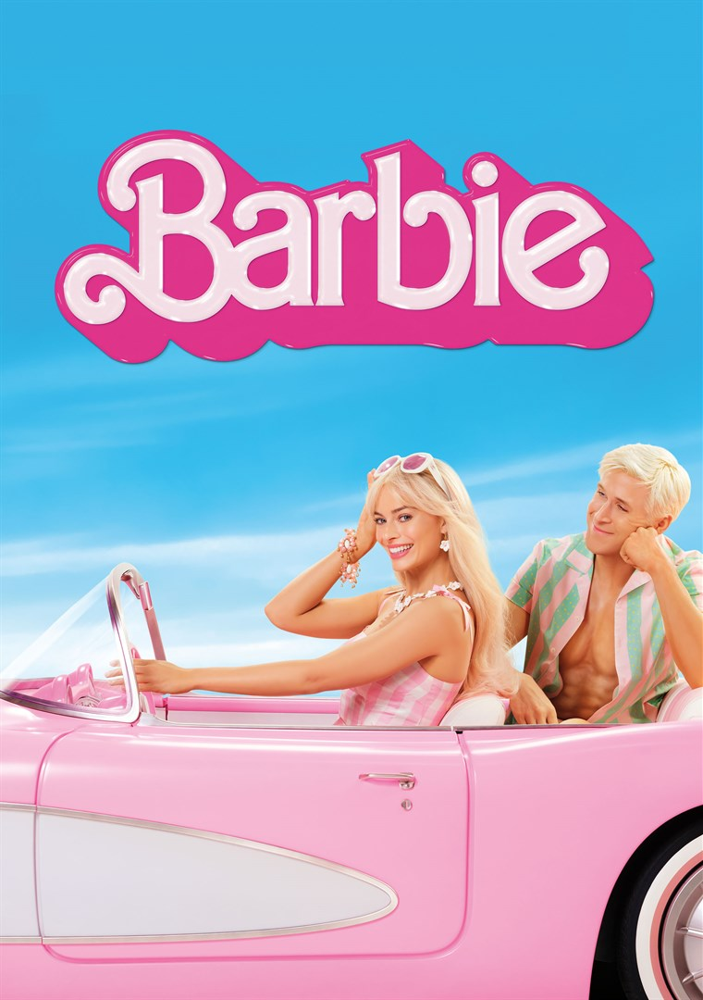

 Barbie is a 2023 fantasy comedy film directed by Greta Gerwig from a screenplay she wrote with Noah Baumbach. Based on the eponymous fashion dolls by Mattel, it is the first live-action Barbie film after numerous animated films and specials. It stars Margot Robbie as the title character and Ryan Gosling as Ken, and follows them on a journey of self-discovery through both Barbieland and the real world following an existential crisis. It is also a commentary regarding patriarchy and the effects of feminism. The supporting cast includes America Ferrera, Michael Cera, Kate McKinnon, Issa Rae, Rhea Perlman, and Will Ferrell.
Barbie premiered at the Shrine Auditorium in Los Angeles on July 9, 2023, and was released in the United States on July 21. Its concurrent release with Universal Pictures' Oppenheimer was the catalyst of the "Barbenheimer" phenomenon, encouraging audiences to see both films as a double feature. The film grossed $1.446 billion and achieved several milestones, including the highest-grossing film of 2023 and the 14th highest-grossing film of all time. Named one of the top 10 films of 2023 by the National Board of Review and the American Film Institute, it received critical acclaim and other accolades, including eight Academy Award nominations (among them Best Picture), winning Best Original Song for "What Was I Made For?"; the song also won Golden Globe Award for Best Original Song while Barbie was awarded Golden Globe Award for Cinematic and Box Office Achievement.